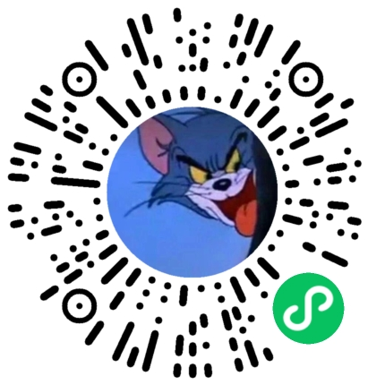

个人信息
个人信息
- 男, 1994/12/04
- 工作经验：5年
- Gitee：https://gitee.com/mdsSJY
- GitHub：https://github.com/MgSrdEer
 工作经历
工作经历
- 上海凹酷凹酷智能科技，创业公司，全栈开发，
2025.4-2026.1- 纬创软件，驻场派遣开发，
2023.8-2025-4- 上海海隆信技软件有限公司， 海外事业部， 中级Java开发工程师，
2021.3-2021.7-2023.8
 项目经历
项目经历2025.4-2026.1
- 项目背景： 基于当下的AIGC能力，项目初期构想是用ai生成具有左右分支可选择的一句话文字剧情，并同时生成对应人物的tts（基于minmax），并为cg添加呼吸动画。制作面向特定群体的女性用户的类乙女向游戏。
- 项目方案：
- 剧情agent设计：
a. 根据用户输入，先进行用户意图推测，并补齐至规定的输入。
b. 先生成故事剧情的章节目录。并让ai按每条目录逐个吐出一句话剧情带左右选项，分支都指向同一个下一个节点，每次生成会带上前面生成的概要作为上下文。
c. 让ai在生成好的主链文本上，选择几处位置（或者随机选几个节点），然后获取开头到选中节点的文本，作为上下文生成分支接入主链。
d. 遍历所有节点，生成tts语音，并入库。- 我的职责：
- 运维：
docker,docker仓库环境搭建,certbot,nginx反向代理,阿里云服务cdn,oss,邮箱推送,短信推送,域名,CI/CD Jenkins。- 前端开发：
cocos creator 3.8, 根据figma设计稿，实现游戏的前端界面。spine 实现呼吸动画。原本计划是只发布ios，所以只针对ios进行了适配和原生功能开发。其中解决了如下问题：
- cocos ts部分写法在ios平台无效的问题。
- ios原生开发工作流，通过jsb调用oc，oc调用swift代码，实现ios原生功能。包括storekit2接入支付，ios状态栏显示，ios声音设置等问题。
- cocos热更新。
- 后端开发：
- 数据服务，提供客户端获取数据的服务。基于gin框架，实现资源的工程管理。
- websocket 实现客户端与服务端的实时通信。
- 解决ai生成的音频资源与故事节点的通过oss储存后的映射问题。
- uber.org/fx 工程化问题。
- orm 低sql提升效率。
- agent服务，实现剧情生成agent mvp版本。
- 基于fastapi + 原生openai api实现。
- 基于celery，asyncio解决需要后台等待ai生成的io密集型队列任务的问题。
- 中间件：
- redis, pgsql, mongodb, oss。
- ai工作流工具链：
- trae 需求不明朗需要迭代的项目使用，在我控制的架构下提炼小任务给trae完成，尽可能降低混乱，且我可以随时介入。
- minimax-m2 需求明确，前端可以用web端满足的，且不太需要维护的项目使用。
- apifox, NocoDB（数据库可视化工具）。
- 国产大模型。
✳ 演示连接（没有mac设备只打包android版本，没有做android适配以及对应的原生开发。目的仅演示。安卓手机浏览器打开该链接下载安装即可。提示并非恶意程序。）：https://oss.sjy.asia/cocos/TheHeart-release.apk
2024.6-2025-3
- 项目背景： 美团的医美组业务方，需求一个基于AIGC优化其在某书平台上投放笔记引流的运营能力。即想要一个可以自动生成某书笔记，只需要人审批就可以进行笔记批量投放的AIGC能力。
- 项目方案： 对该需求进行了工程化的拆解后设计了如下的AI Agent应用。
- 自动化获取某书热点与热门笔记，并根据当前时间情景，分析出热点，总结出笔记创建方向，指导后续agent创作。
- 基于获取到的热门笔记，提取一个笔记模板式样，提供给后续agent参考
- 为降低大模型创作幻觉，将需求方提供的医美专业知识构建为RAG，提供给大模型参考。
- 获取1,2,3的结果后，构建prompt，提交给大模型进行创作
- 提供一个web交互页面。
- 我的职责： 工程实现是基于美团内部的现有能力去实现，如mdp框架，Friday大模型应用工厂。
我主要完成了如下的工作：
- 上述1中获得数据后构建分析热点方向的agent，上述2，3，4Agent的实现，agent实现基于MDP中内置的SpringAi，和Friday大模型应用工厂。Rag构建是基于美团的ES平台能力，ES v8的向量库搭建的RAG。
- 完成了部分web交互页面，功能有，agent入口，笔记生成查询。基于美团的remo和talos平台搭建。
2023.8-2024.6
- 技术栈：
springboot, MySql, Redis, Vue3+vite+Ts, .NETCore- 项目简介：
这是浦发信用卡中心的一个智能语音客服项目，其中的一个功能自动拨号与客户核实信用卡业务相关信息。 原本该功能是.NETCore框架，因为浦发要求国产替代，所以统统全部重新架构审核，并按规定重新设计开发。- 工作描述：
文字处理服务开发。
该服务的大致职责：
**根据上游提供的用户信息、语音识别结果等，生成向客户提问，用于核实信息的统一业务QA话术。并提供给下游服务使用。地址字符串分词服务开发。
该服务的大致职责：
**根据提供的地址字符串，按定义进行分词。这是一个工具服务。单位名称字符串分词服务开发。
该服务的大致职责：
** 同理。- 后台工具开发。
※地址字符串分词服务，单位名称字符串分词服务。
具体可以参考https://gitee.com/mdsSJY/addr-correct。
声明：
项目闭源，此展示也并非全部源码。此展示仅仅为了方便相关人对我个人的coding习惯有些许了解的依据，或提供相关人对我个人相关技术水平评价有所参考。
2021.7-2023.8
- 技术栈：
ObjectWorks＋框架, JBoss, Oracle, DB2, Pega低代码量平台, html, js- 项目简介：
- 对日外包项目《全国健康保険》系统。这是一个保险业务相关的系统开发项目。
- 对日外包项目《TC金融支付BPM》系统。这是一个金融业务相关的系统开发项目。
- 工作描述：
该段经历的项目属于大型多人开发的项目，我承担PG的角色职责。并履行了自己的职责。具体情况欢迎参考我的过往简历
https://pan.baidu.com/s/1LBJArEsFsrqIBBloITW3eg?pwd=p8yc
业余时间
我6个个人精选项目
- https://gitee.com/mdsSJY 主页可以查看我的绿墙
我的作品集
- 基于开源项目TradingAgents-CN的微信小程序。可以微信扫码进行体验前端。（微信小程序相关规定，无法展示后端）

个人开发日志
- 记录的是我开发中遇到觉得应该记录的技术细节https://gitee.com/mdsSJY/technical-logs
 技术栈
技术栈
- 后端：
- 非常熟悉Java以及JDK相关开发套件，Java相关生态，后端相关中间件。
- 熟悉python，以及python的一些相关生态，开发手脚架
- 熟悉golang，以及golang的一些相关生态，开发手脚架
- 了解C#，以及C#的一些相关生态，开发手脚架
- 根据开发需求了解什么时候应该用哪些中间件，包括但不限于
pgsql,Redis,RabbitMQ等。- 前端：
- 熟悉Vue3, React, TypeScript, 以及一些前端生态，开发手脚架
- 熟悉cocos，以及了解一些基于cocos 的 ios 原生开发，和android 原生开发。
- Tools：
Git,MarkDown,Shell,Docker,IDE,Trae,minmax-m2,wireguard,certbot,apifox,nginx,阿里云服务,大语言模型AI。
实际工作中能够利用多家AI和搜索引擎独立解决全部遇到的开发问题。
 教育经历
教育经历
- 硕士，贵州民族大学，化学工程，2018.9~2021.6
- 学士，渤海大学，应用化学，2013.9~2018.6
- 日语: 非常熟悉(有N1证书，可作为工作语言，可听说读、输入法输入)
- 英语: 一般
- 较强自学能力、Coding时高度专注。
- 狂热Coding爱好者，游戏爱好者，动漫爱好者，技术极客爱好者，B站
- 我最近常看的技术博主@Voidmatrix,@IT咖啡馆,@极海Channel,@水煮肉片饭
- 我的Trae 25年年度报告飞书扫码可以查看https://pic1.imgdb.cn/item/69633ba075db907620f22e68.png
{kind=link}